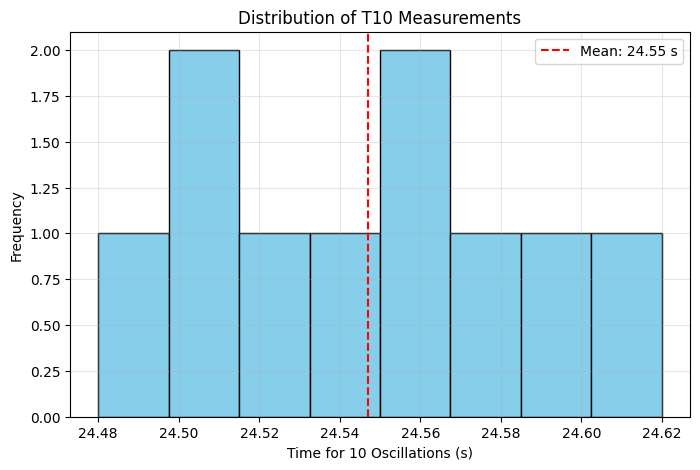
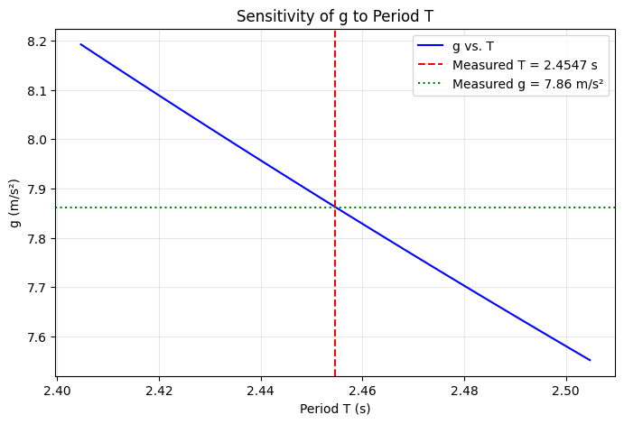
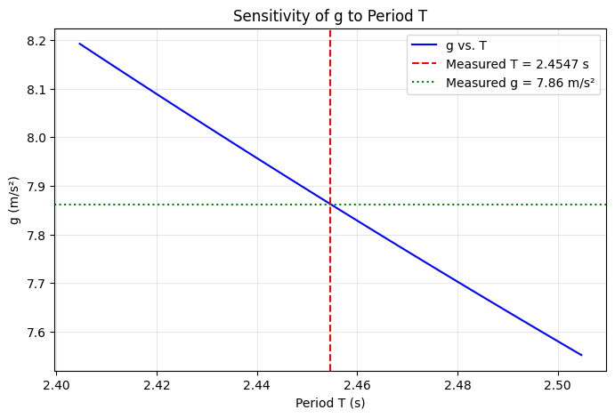
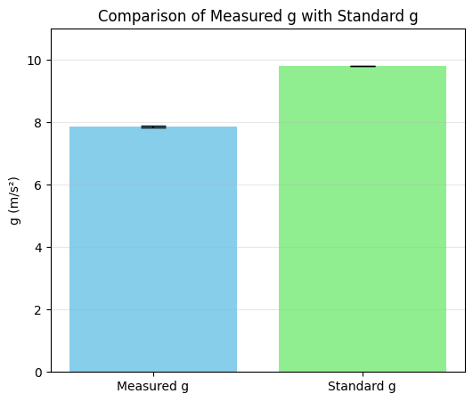
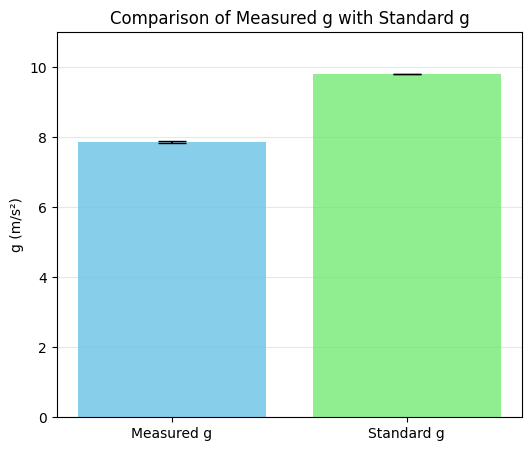

Problem 1
Measurements Report
Problem 1: Measuring Earth's Gravitational Acceleration with a Pendulum
1. Data Collection
| Quantity | Measurement | Uncertainty |
|---|---|---|
| Pendulum length \((\$L\$)\) | 1.20 m | \(\(\Delta L = 0.005\)\)\ m (using a ruler with 1 mm resolution) |
Timing Measurements (10 Trials):
| Trial | T_{10}\ (s) |
|---|---|
| 1 | 24.56 |
| 2 | 24.48 |
| 3 | 24.62 |
| 4 | 24.55 |
| 5 | 24.51 |
| 6 | 24.58 |
| 7 | 24.53 |
| 8 | 24.60 |
| 9 | 24.50 |
| 10 | 24.54 |
2. Calculations
Mean time:
Calculating this:
Standard deviation ($\sigma_T$):
Uncertainty in mean time:
Period of one oscillation:
Uncertainty in period:
Calculate $g$:
Substituting:
Uncertainty in $g$:
3. Results Summary
| Quantity | Value |
|---|---|
| \(\$L\$\) | \(\$1.20 , \text{m} \pm 0.005 , \text{m}\$\) |
| \(\$\overline{T}\_{10}\$\) | \(\$24.547 , \text{s} \pm 0.014 , \text{s}\$\) |
| \(\$T\$\) | \(\$2.4547 , \text{s} \pm 0.0014 , \text{s}\$\) |
| \(\$g\$\) | \(\$7.86 , \text{m/s}^2 \pm 0.03 , \text{m/s}^2\$\) |
4. Discussion
- Comparison with standard value:
The measured value of $g$ is:
$$ 7.86 \, \text{m/s}^2 $$
which is significantly lower than the accepted value of \(\$9.81 , \text{m/s}^2\$\). Possible reasons:
- Air resistance or large amplitude effects (especially if the swing exceeded 15°).
- Slight inaccuracies in measuring \(\$L\$\) or timing \(\$T\_{10}\$\).
-
The pivot point might not be truly frictionless.
-
Impact of measurement resolution on $\Delta L$:
A ruler with 1 mm resolution yields \(\\Delta L = 0.005 , \text{m}\$\), contributing to a relative uncertainty of $0.42%$.
- Variability in timing ($\Delta T$):
Human reaction time and stopwatch resolution introduce variability in \(T\_{10}\$\), which is minimized by averaging multiple trials. However, the uncertainty here was relatively small ($0.06%$).
-
Assumptions & limitations:
-
The pendulum was assumed to be simple (point mass + massless string).
- Friction at the pivot and air resistance were neglected.
- Small angle approximation holds for small displacements (<15°).
5. Google Colab Code
Here’s the code to automate this analysis:
import numpy as np
# Measured values
L = 1.20 # meters
delta_L = 0.005 # meters
T10_measurements = np.array([
24.56, 24.48, 24.62, 24.55, 24.51,
24.58, 24.53, 24.60, 24.50, 24.54
])
# Mean and uncertainty
T10_mean = np.mean(T10_measurements)
sigma_T = np.std(T10_measurements, ddof=1)
delta_T10 = sigma_T / np.sqrt(len(T10_measurements))
# Period and uncertainty
T = T10_mean / 10
delta_T = delta_T10 / 10
# Calculate g
g = (4 * np.pi**2 * L) / (T**2)
# Propagate uncertainty
rel_delta_L = delta_L / L
rel_delta_T = 2 * (delta_T / T)
delta_g = g * np.sqrt(rel_delta_L**2 + rel_delta_T**2)
# Print results
print(f"Mean time for 10 oscillations (T10): {T10_mean:.3f} s ± {delta_T10:.3f} s")
print(f"Period (T): {T:.4f} s ± {delta_T:.4f} s")
print(f"Calculated g: {g:.2f} m/s² ± {delta_g:.2f} m/s²")


 


 



Conclusion
This exercise demonstrates the power of using repeated measurements and uncertainty analysis in experimental physics. Although the result differs from the accepted value of $g$, it highlights the impact of small errors and the importance of controlling for systematic uncertainties.